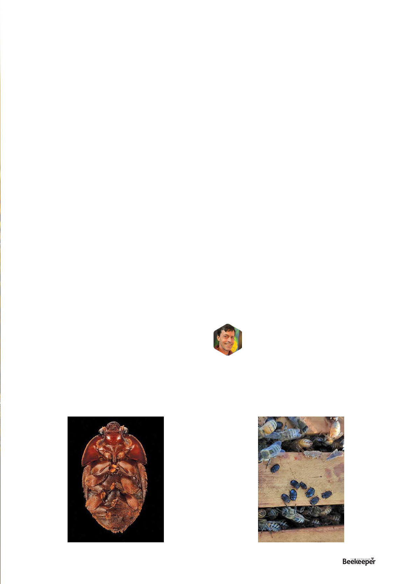

distances from a central point and tried to knock down SHB
populations in those colonies. Next, they let adult SHB gorge
on food carrying a red dye (15,000 beetles in total) and, in a
series of six trials, set these reddened beetles free.
Sadly, 98% of the dye-marked beetles were never seen again.
Perhaps they explored different resources, found additional
hives in the area, evaded scientist eyes in subsequent colony
checks, or met an untimely death. Of the 310 confirmed red
subjects found in hives, about ¾ ended up in colonies closer
than 100 meters from their release point, suggesting that the
allure of colonies is stronger than the desire to vet distant pros-
pects. Still, seven beetles went more than 3,000 meters from
their release point within one week, with two being found in a
colony 13,000 meters (8+ miles) away just a week later. Beetles
were sexed before release and significantly more females found
colony homes than males, suggesting either that females
have better sensory skills or that males, often being less nutri-
tion-driven, were hovering elsewhere in the environment for
that first week.
Work conducted early after the arrival of SHB to the U.S.
supported the former: females are simply better at orienting
to nests (Suazo, A., Torto, B., Teal, P.E.A. & Tumlinson, J.H.
Response of the small hive beetle (Aethina tumida) to honey
bee (Apis mellifera) and beehive-produced volatiles. Apidologie
2003, 34, 525–533).
Regardless of how beetles find your country and your bee-
hive, you are probably most interested in whether they will be
anything more than a skittish black mole that disappears in
the blink of one’s eye. A recent survey following up on hive
infestations and impacts in a long-established population from
southern Italy suggests that, even for European honey bees,
SHB infestations are kept in check much of the time (bee races
from the original African range of SHB are notoriously good at
keeping these scavengers at extremely low levels). Camilla
Di Ruggiero and colleagues scanned through a few hundred
Italian beehives at two seasonal time points to count beetles
(Di Ruggiero, C., Gyorffy, A., Artese, F., De Carolis, A., De Simone,
A., Pietropaoli, M., Pedrelli, C., Formato, G. Environmental and
colony-related factors linked to small hive beetle (Aethina
tumida) infestation in Apis mellifera. Agriculture 2025, 15,
doi:10.3390/agriculture15090962).
More accurately, they enlisted beekeepers to rigorously
screen colonies for beetles, finding an average of slightly under
one beetle per colony with a maximum of 12. This study sought
to determine which factors made colonies beetle havens.
Confirming early behavioral studies of hygienic bees, colonies
with a high bee-to-frame ratio held significantly fewer SHB.
SHB, like other scavenging parasites, thrive on quiet places to
eat in peace and ultimately produce vulnerable larvae. While
beetles acquire hive smells early upon entering the hive and
largely pass without incident among bees, any contact with
bees presents risk in terms of removal or dismemberment.
Consequently, quieter colonies present less risk.
Colonies in the shade harbored significantly larger bee-
tle populations, hinting at climatic vulnerabilities in the
Mediterranean area for adult or ‘wandering phase’ beetle
larvae. Finally, and similarly to varroa and other pests, the
number of beetles in a colony at one survey point is a good
predictor for future surveys, i.e., they are hard to shake once
established.
If you are a beekeeper whose colonies or stacked frames
are indeed harmed by this pest, there are excellent reviews of
hive beetle control methods (most recently a paper by Julia St.
Amant and Cameron Jack comparing yet-to-come-to-licensed
treatments; St. Amant, J., Jack, C.J. Evaluating the toxicity of
known western honey bee-safe insecticides in controlling small
hive beetles (Aethina tumida). Diversity 2025, 17, doi:10.3390/
d17040230).
If you are not in that camp, give some respect when you
see a rare skittering beetle. This insect achieved better living
only by cracking the chemical codes inherent to surviving in
a hostile bee hive. It has also traveled a long distance to see
you and your bees.
A gleaning from Bee Culture July 2025
Dr Jay Evans is a research entomologist at the USDA’s
Beltsville Bee Research Laboratory, Maryland, USA. He
has a monthly series in Bee Culture Magazine called
“Found in Translation,” and his older articles can be
found at https://www.beesfoundintranslation.org/
Courtesy of Sam Droege, US Geological Survey.
Photo Credit: Courtesy of Francisco Posada-Florez.
Vol. 127 | No. 4 |
| 35